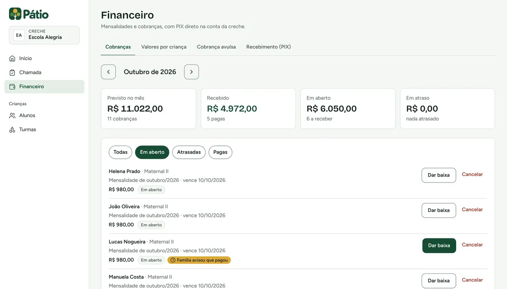
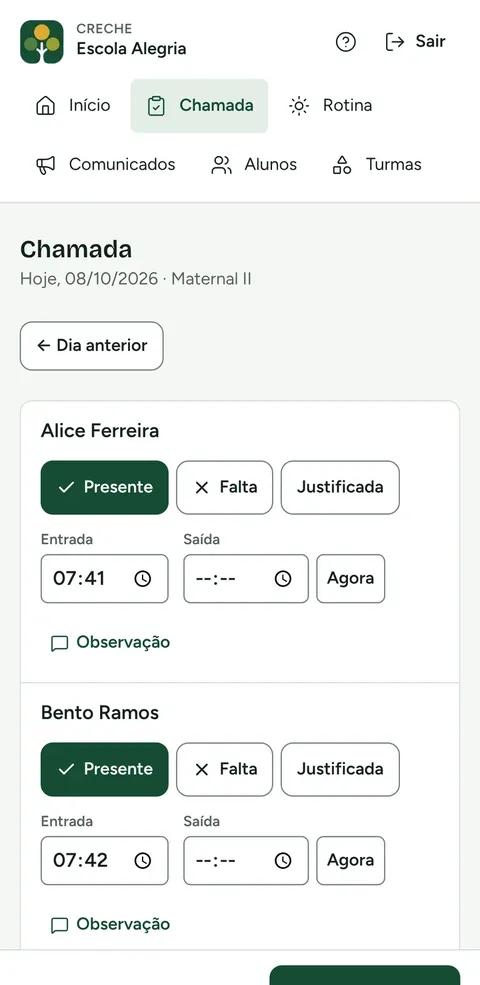
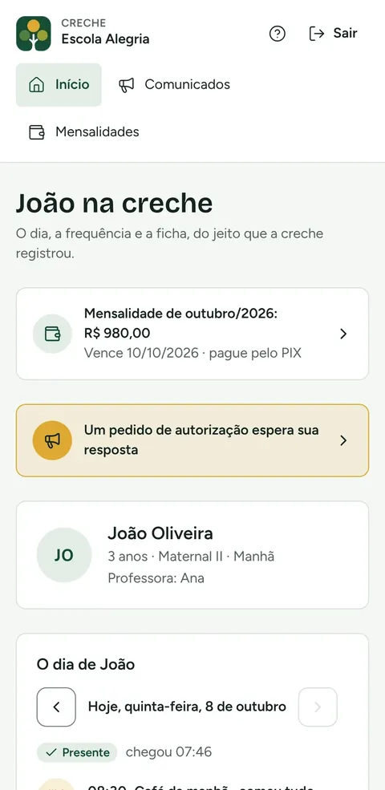

SaaS · Educação infantil
Pátio
A creche inteira em um só lugar. Plataforma multi-escola para creches e escolas de educação infantil, feita para equipes que usam mais o celular do que o computador.
- Alunos, turmas, chamada digital e rotina do dia
- Portal da família com comunicados e autorizações
- Mensalidades com PIX e financeiro com lógica contábil
- Documentos em A4, permissões por função e LGPD
Next.jsSupabasePWAEm beta
Abrir o site